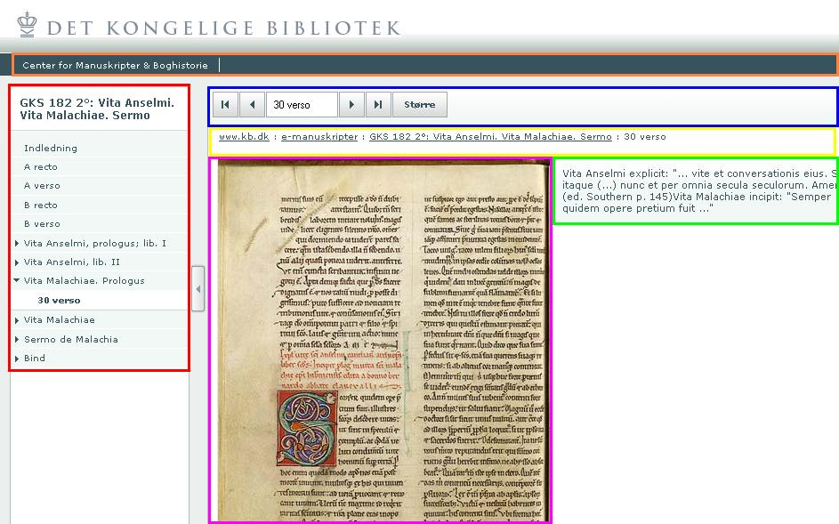

<< The Guaman Poma web site | Table of Contents | The future >>
The user interface has been modified a lot since the old manus days. Tom Juul Andersen and Gitte Petersen has helped developing a new interface that both satisfies the new functionality, and our new hight usability standards.
The new interface is divided into sections.
The User Interface is implemented in OpenCms. It has two simple Java classes to extract information from the Mets object, and from the Original MANUS database (The MANUS scheme holds information of localized strings used in the GUI. That information is not applicable to either METS or MODS, therefore we kept these data in the database for now).
It has it's own style information, making it complete independent of the rest of the new www.kb.dk website.
For more information refer to the OpenCms module dk.kb.dup.mets documentation page on DUP's TWiki.
$Revision: 1.3 $
Last modified $Date: 2007/03/08 16:20:07 $
by $Author: jac $